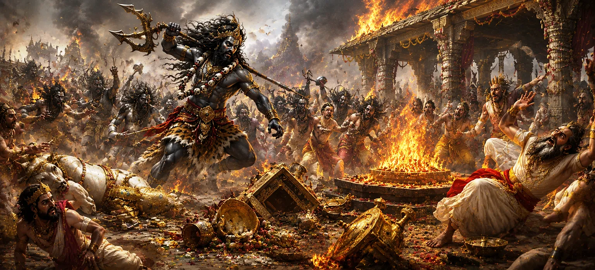

यह अध्याय वीरभद्र और भगवान शिव के गणों द्वारा दक्ष के यज्ञ के नाटकीय विनाश का वर्णन करता है। सती के आत्मदाह और दक्ष के निरंतर अहंकार के बाद, अंततः दैवीय न्याय का समय आ गया। अभिमान और अनादर से भ्रष्ट हो चुका पवित्र अनुष्ठान अब जारी नहीं रह सकता। इन घटनाओं के माध्यम से, शिव पुराण यह दर्शाता है कि कोई भी कार्य, चाहे वह कितना भी भव्य क्यों न हो, तब सफल नहीं हो सकता जब वह विनम्रता, भक्ति और ईश्वर के प्रति श्रद्धा से अलग हो।
शिव के दुर्जेय गणों का नेतृत्व करते हुए, वीरभद्र दक्ष के यज्ञ स्थल पर पहुंचे। उनकी उपस्थिति ने इकट्ठे हुए लोगों में डर पैदा कर दिया, क्योंकि जो शगुन पहले प्रकट हुए थे, अब उनका असली अर्थ पता चला है। ईश्वरीय न्याय आ गया था.
वीरभद्र और गणों ने यज्ञस्थल पर धावा बोल दिया। संरचनाएँ बिखर गईं, औपचारिक व्यवस्थाएँ बाधित हो गईं, और गर्व का जो माहौल इस कार्यक्रम पर हावी हो गया था, वह बह गया। यह विनाश झूठी प्रतिष्ठा और अहंकार के पतन का प्रतीक है।
जैसे ही यज्ञ स्थल में अराजकता फैल गई, कई प्रतिभागी डर के मारे भाग गए। जिन लोगों ने चेतावनियों को नजरअंदाज कर दिया था, वे अब दक्ष के कार्यों के परिणाम देख रहे थे। वह निश्चितता और आत्मविश्वास जो एक बार बलिदान को घेरे हुए था, पूरी तरह से गायब हो गया।
बलिदान का विनाश एक अनुष्ठान के अंत से कहीं अधिक दर्शाता है। यह दक्ष के अहंकार के पतन और भगवान शिव का सम्मान करने से इनकार करने का प्रतीक था। इस घटना ने प्रदर्शित किया कि सांसारिक स्थिति या उपलब्धियों की परवाह किए बिना, अहंकार अंततः दुख की ओर ले जाता है।
धर्म का उल्लंघन करने वाले कार्य अंततः परिणाम लाते हैं।
अभिमान सबसे प्रभावशाली उपलब्धियों को भी नष्ट कर सकता है।
आध्यात्मिक सफलता के लिए विनम्रता और भक्ति की आवश्यकता होती है।
दिव्य चेतावनियाँ, ऋषियों की उद्घोषणाएँ, और संकेत जो पिछले अध्यायों में प्रकट हुए थे, वे सभी इस क्षण में समाप्त हो गए। जो भविष्यवाणी की गई थी उसे अब टाला नहीं जा सकता था, और परिणाम बिल्कुल वैसे ही सामने आए जैसा कि नियति को चाहिए था।
यद्यपि विनाश भयानक प्रतीत हुआ, इसका गहरा उद्देश्य ब्रह्मांडीय संतुलन की बहाली था। अभिमान और अनादर के प्रभाव को दूर करके, ईश्वर ने सद्भाव और धर्म की वापसी का मार्ग तैयार किया।
यह अध्याय हमें याद दिलाता है कि बाहरी सफलता और प्रभावशाली अनुष्ठान अपना मूल्य खो देते हैं जब वे विनम्रता और भक्ति से अलग हो जाते हैं। सच्ची महानता स्थिति या शक्ति से नहीं, बल्कि ईश्वर के प्रति सम्मान और धर्म के पालन से मापी जाती है।
यज्ञ के विनाश से शिव के गणों की अपार शक्ति और निष्ठा का भी पता चला। वीरभद्र की आज्ञा के तहत कार्य करते हुए, उन्होंने अपने मिशन को अटूट समर्पण के साथ पूरा किया। उनके कार्यों ने प्रदर्शित किया कि जो लोग ईमानदारी से ईश्वर की सेवा करते हैं वे व्यक्तिगत हितों से परे एक उच्च उद्देश्य के साधन बन जाते हैं।
दक्ष का बलिदान भक्ति के बजाय प्रतिष्ठा और गौरव का प्रतीक बन गया था। इसका विनाश एक अनुस्मारक के रूप में कार्य करता है कि बाहरी भव्यता वास्तविक आध्यात्मिकता का स्थान नहीं ले सकती। जब अनुष्ठान अपना पवित्र उद्देश्य खो देते हैं और अहंकार का माध्यम बन जाते हैं, तो अंततः उनकी नींव ढह जाती है।
"जहाँ अभिमान भक्ति को भ्रष्ट कर देता है, ईश्वरीय न्याय संतुलन बहाल कर देता है।"
सती खण्ड की पवित्र घटनाओं की खोज जारी रखें क्योंकि दक्ष के बलिदान का विनाश दैवीय न्याय को पूरा करता है और कथा कुसुव और दधिका की ज्ञानवर्धक कहानी की ओर बढ़ती है, जो गहरे आध्यात्मिक सत्य और भक्ति की शक्ति को प्रकट करती है।